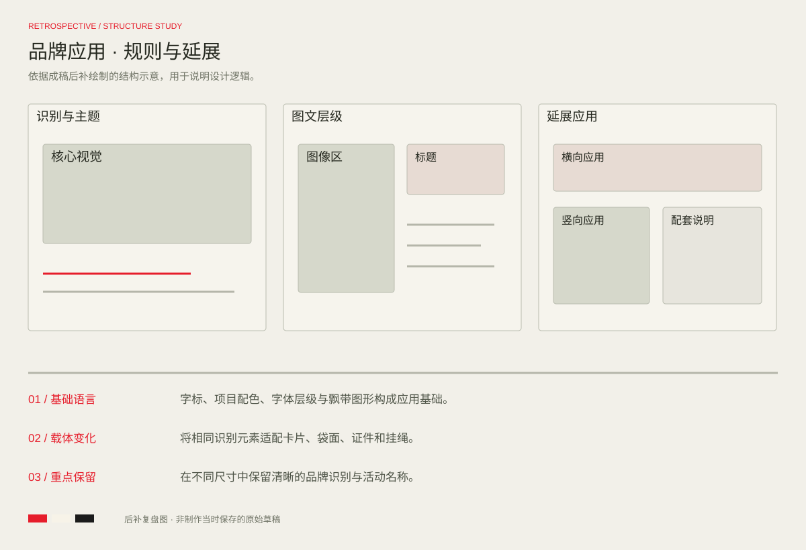

PROJECT 04 / VISUAL APPLICATION
让快乐，延续到每一处
可口可乐 · 品牌视觉应用
从字标、配色、字体层级与辅助图形出发，延展到体验卡、手提袋、现场工作证与挂绳，呈现同一视觉语言在不同物料中的应用。
完整设计 / FULL PROJECT点击图片放大查看
DESIGN REVIEW / STRUCTURE STUDY
方案复盘与版式推演
基于当前成稿后补绘制的结构示意，用于解释信息层级、构图与视觉延展；此图为方案复盘，不代表制作当时保存的原始草稿。

基础语言
字标、项目配色、字体层级与飘带图形构成应用基础。
载体变化
将相同识别元素适配卡片、袋面、证件和挂绳。
重点保留
在不同尺寸中保留清晰的品牌识别与活动名称。